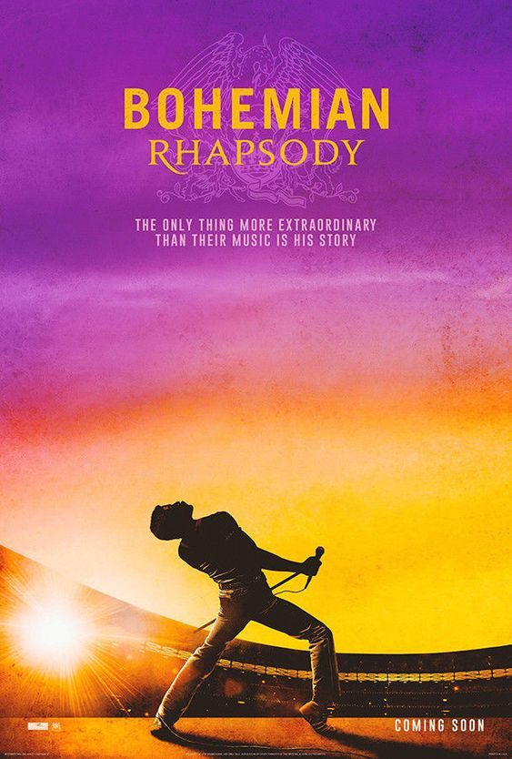

Queen

|
Bohemian Rhapsody adalah lagu legendaris dari band rock asal Inggris, Queen, yang dirilis pada tahun 1975 sebagai bagian dari album A Night at the Opera. Siapa sih yang gak tau lagu ini,lagu yang ditulis oleh Freddie Mercury, vokalis utama Queen, dan dikenal sebagai salah satu karya musik paling inovatif dan ikonik sepanjang masa.
Lagu ini unik karena strukturnya yang tidak biasa, tanpa bagian chorus, dan terbagi menjadi beberapa segmen: pembuka piano (ballad), bagian opera, segmen rock, dan penutup yang tenang. Perpaduan berbagai gaya musik ini membuat "Bohemian Rhapsody" berbeda dari lagu-lagu rock lainnya pada masanya.
Secara lirik, lagu ini bercerita tentang seorang pria yang mengaku telah membunuh seseorang dan merenungi nasib serta dosanya. Namun, makna sebenarnya dari lagu ini masih menjadi misteri karena Freddie Mercury tidak pernah menjelaskan secara pasti arti di balik liriknya. Banyak orang percaya lagu ini menggambarkan konflik batin dan kebebasan diri.
Selain dari sisi musik, "Bohemian Rhapsody" juga dikenal lewat video musiknya yang inovatif, yang dianggap sebagai salah satu pelopor video musik modern. Lagu ini mencapai kesuksesan besar secara komersial dan kritik, dan tetap populer hingga saat ini. Dengan durasi sekitar 6 menit, lagu ini membuktikan bahwa musik tidak harus mengikuti formula untuk menjadi sukses. "Bohemian Rhapsody" adalah simbol kreativitas, kebebasan berekspresi, dan warisan abadi Queen dalam dunia musik.
|